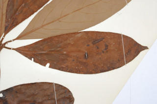
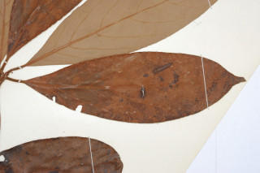

Trees up to 10 m tall.
10 ಮೀ.ವರೆವಿಗೆ ಬೆಳೆಯುವ ಮರಗಳು.
10 മീറ്റര് വരെ ഉയരമുളള മരങ്ങള്.
மரங்கள் 10 மீ. உயரம் வரை வளரக்கூடியது.
Bark smooth
ತೊಗಟೆ ನಯವಾಗಿರುತ್ತದೆ.
മിനുസമുളള പുറംതൊലി.
மரத்தின் பட்டை வழுவழுப்பானது.
Young branchlets terete, rusty tomentose.
ಎಳೆಯ ಕಿರುಕೊಂಬೆಗಳು ದುಂಡಾಗಿರುತ್ತವೆ ಮತ್ತು ತುಕ್ಕು ಬಣ್ಣದ ದಟ್ಟವಾದ ಮೃದುತುಪ್ಪಳದಿಂದ ಕೂಡಿರುತ್ತವೆ.
തുരുമ്പന് രോമിലമായ, ഉരുണ്ട ഇളംഉപശാഖകള്
சிறிய நுனிக்கிளைகள் குறுக்குவெட்டுத் தோற்றத்தில் வளையமானது, துரு போன்ற உரோமங்களுடையது.
Leaves simple, alternate, spiral, subverticilate; petiole to 2.5 cm long, terete, rusty tomentose; lamina 12-27 x 4-6.5 cm, narrow elliptic to oblanceolate, apex acuminate, base cuneate to acute, margin undulate, chartaceous, glaucous, fulvous tomentose when young, later glabrous except midrib beneath; midrib raised; secondary_nerves 7-10 pairs; tertiary_nerves nearly closely and horizontally_percurrent, not prominent.
ಎಲೆಗಳು ಸರಳವಾಗಿದ್ದು, ಪರ್ಯಾಯ ಮತ್ತು ಸುತ್ತು ಜೋಡಣಾ ಉಪತರಂಗಿತ ವ್ಯವಸ್ಥೆಯಲ್ಲಿರುತ್ತವೆ; ತೊಟ್ಟುಗಳು 2.5 ಸೆಂ.ಮೀ. ವರೆಗಿನ ಉದ್ದ ಹೊಂದಿದ್ದು ದುಂಡಾಕಾರದಲ್ಲಿದ್ದು ತುಕ್ಕು ವರ್ಣದ ದಟ್ಟ ಮೃದು ತುಪ್ಪಳದಿಂದ ಕೂಡಿರುತ್ತವೆ; ಪತ್ರಗಳು 12-27 x 4-6.5 ಸೆಂ.ಮೀ ಗಾತ್ರ ಹೊಂದಿದ್ದು,ಸಂಕುಚಿತ- ಅಂಡವೃತ್ತದಿಂದ ಬುಗುರಿಯವರೆಗಿನ ಆಕಾರದಲ್ಲಿರುತ್ತವೆ. ಪತ್ರದ ತುದಿ ಕ್ರಮೇಣ ಚೂಪಾಗುವ ಮಾದರಿಯಲ್ಲಿದ್ದು ,ಬೆಣೆಯಾಕಾರದಿಂದ ಚೂಪದ ಮಾದರಿವರೆಗಿನ ಬುಡ ಹೊಂದಿರುತ್ತವೆ;ಪತ್ರಗಳ ಅಂಚು ತರಂಗಿತವಾಗಿರುತ್ತದೆ;ಮೇಲ್ಮೈ ಕಾಗದವನ್ನೋಲುವ ಮಾದರಿಯಲ್ಲಿದ್ದು ಮಾಸಲು ಬೂದು ಹಸಿರು ಬಣ್ಣ ಹೊಂದಿರುತ್ತದೆ;ಪತ್ರಗಳು ಎಳೆಯದಾಗಿದ್ದಾಗ ನಸುಗೆಂಪಿನಿಂದ ಕೂಡಿದ ಹಳದಿ ಬಣ್ಣಹೊಂದಿದ್ದು ನಂತರ ಪತ್ರದ ತಳ ಭಾಗದ ಮಧ್ಯನಾಳ ಹೊರತುಪಡಿಸಿ ಮಿಕ್ಕೆಲ್ಲಾ ಭಾಗಗಳು ರೋಮರಹಿತವಾಗಿರುತ್ತವೆ; ಮಧ್ಯನಾಳ ಮೇಲೆದ್ದಿರುತ್ತದೆ; ಎರಡನೇ ದರ್ಜೆಯ ನಾಳಗಳು ಅಂದಾಜು 7 -10 ಜೋಡಿಗಳಿರುತ್ತವೆ;ಮೂರನೇ ದರ್ಜೆಯ ನಾಳಗಳು ಹೆಚ್ಚೂ ಕಡಿಮೆ ತೀರಾ ಸನಿಹವಾಗಿದ್ದು ಲಂಬರೇಖೆಗೆ ಸಮಕೋನದಲ್ಲಿದ್ದು ಎಲೆದಿಂಡಿಗೆ ಅಡ್ಡವಾಗಿ ಕೂಡುವಂತಿದ್ದು ಪ್ರಮುಖವಾಗಿರುವುದಿಲ್ಲ.
ലഘുവായ ഇലകള്, ഏകാന്തര ക്രമത്തില്, സര്പ്പിളമായടുക്കിയതാണ്, ഉപതരംഗിതമാണ്; തുമ്പന് രോമിലമായ, ഉരുണ്ട ഇലഞെട്ടിന് 2.5 സെ.മീ വരെ നീളം; പത്രഫലകത്തിന് 12 സെ.മീ മുതല് 27 സെ.മീ വരെ നീളവും 4 സെ.മീ മുതല് 6.5 സെ.മീ വരെ വീതിയും, വീതികുറഞ്ഞ-ദീര്ഘവൃത്തം തൊട്ട് അപകുന്താകാരംവരെയാകാം, പത്രാഗ്രം ദീര്ഘമാണ്, പത്രാധാരം ആപ്പാകാരം തൊട്ട് നിശിതം വരെയാകാം, അരികുകള് തരംഗിതമാണ്, കടലാസ് പോലത്തെ പ്രകൃതം, നീലരാശിയുളളതാണ്, ഇളതായിരിക്കുമ്പോള് ഫള്വസ് രോമിലമാണ്, പിന്നീട് കീഴെ മുഖ്യസിരയൊഴികെ അരോമിലമാണ്; മുകളില് ഉയര്ന്ന് നില്ക്കുന്ന മുഖ്യസിര; 7 മുതല് 10 വരെ ജോഡി ദ്വിതീയ ഞരമ്പുകള്; അത്ര പ്രകടമല്ലാത്ത, ഏതാണ്ട്, അടുത്ത തിരശ്ചീന പെര്കറന്റ് വിധത്തിലുളള ത്രിതീയ ഞരമ്പുകള്.
இலைகள் தனித்தவை, மாற்றுஅடுக்கமானவை, சுழல் போல் அமைந்தது, சப்வர்டிசில்லேட்; இலைக்காம்பு 2.5 செ.மீ. நீளமானது, குறுக்குவெட்டுத் தோற்றத்தில் வளையமானது, துரு போன்ற உரோமங்களுடையது; இலை அலகு 12-27 X 4-6.5 செ.மீ. குறுகிய நீள்வட்ட முதல் தலைகீழ் ஈட்டி வடிவானது, அலகின் நுனி அதிக்கூரியது, அலகின் தளம் ஆப்பு வடிவம் முதல் கூரியது, அலகின் விளிம்பு அலைப்போன்றது, சார்ட்டேசியஸ், அலகின் கீழ்பரப்பு மெழுகு பூசியது போன்றது அல்லது சாம்பல் கலந்த நீல நிறமானது (க்களாக்கஸ்), குறுத்து அலகின் கீழ்பரப்பு உரோமங்களுடையது, முற்றிய இலைகள் உரோமங்களற்றது, ஆனால் மையநரம்பு கீழ்பரப்பில் உரோமங்களுடையது; மையநரம்பு மேற்பரப்பில் அலகின் பரப்பைவிட உயர்ந்தது; இரண்டாம் நிலை நரம்புகள் 7-10 ஜோடிகள்; மூன்றாம் நிலை நரம்புகள் நெருக்கமானவை மற்றும் விளிம்பை நோக்கிய கிடைமட்டத்தில் இணையான பெர்க்கரண்ட், மெல்லியவை.
Flowers unisexual, dioecious; female flowers in umbels on short peduncle.
ಹೂಗಳು ಏಕಲಿಂಗಿಗಳಾದ್ದು, ಪ್ರತ್ಯೇಕ ಸಸ್ಯಗಳಲ್ಲಿರುತ್ತವೆ;ಹೆಣ್ಣು ಹೂಗಳು ಕಿರಿದಾದ ವೃಂತವುಳ್ಳ ಪೀಠಛತ್ರ ಪುಷ್ಪಮಂಜರಿಯಲ್ಲಿರುತ್ತವೆ.
പൂക്കള് ഏകലിംഗികളാണ്, ഡയീഷ്യസും; പെണ്പൂക്കള്, കുറിയ തണ്ടുളള ഛത്രമഞ്ജരികളിലുണ്ടാകുന്നു.
மலர்கள் ஓர்பாலானவை, ஈரகம் கொண்டவை; பெண்மலர்கள் அம்பல் வகை மற்றும் குட்டையான மஞ்சரி காம்புடையது.
Berry, globose, to 1 cm across; seed 1.
ಬೆರ್ರಿಗಳು ಗೋಳಾಕಾರದಲ್ಲಿದ್ದು 1 ಸೆಂ.ಮೀ.ವರೆಗಿನ ಅಡ್ಡಗಳತೆ ಹೊಂದಿರುತ್ತವೆ ಮತ್ತು ಒಂದು ಬೀಜವನ್ನೊಳಗೊಂಡಿರುತ್ತವೆ.
ഒറ്റവിത്തുളള കായ, 1 സെ.മീ കുറുകേയുളള, ഗോളാകാര ബെറിയാണ്.
முழுச்சதைகனி (பெர்ரி), கோளவடிவானது, 1 செ.மீ. குறுக்களவுடையது; விதை ஒன்றுடையது.
 
